| 日付 | 2021年4月18日（日） |
|---|---|
| 山域 | 西上州 |
| メンバー | 家族（妻、長女・10歳、長男・7歳） |
| 山行形態 | 子連れ日帰り |
| アクセス | 車 |
| ルート (Map) | 恐竜の足跡駐車場 (8:44) - (9:30) 登山口 - (10:15) 立処山鍾乳洞 (10:52) - (11:06) 立処山 - (11:25) 昼食 (11:45) - (13:07) 明家 (13:41) - (13:48) オバンド峠 - (14:24) 車道 - (14:38) 恐竜の足跡駐車場 |
先週のリベンジ登山で立処山に行く。
不安定な天候とのことで、いくつかの山の候補をあげていたが
朝に予報と頭上の青空を見て、立処山に決定。
3度目の正直だ。
恐竜の足跡駐車場に車を停める。標高570m。
どこに車を停めるか、どっち周りで歩くか、いろいろ迷ったが、
トイレがあるこの場所に駐車し、車道歩きが下りとなる左回りに決定する。
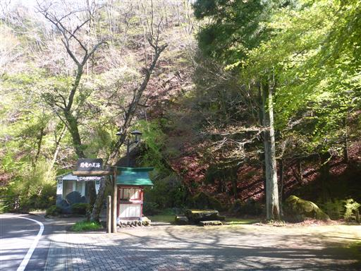
最初は車道を歩いて登山口を目指す。
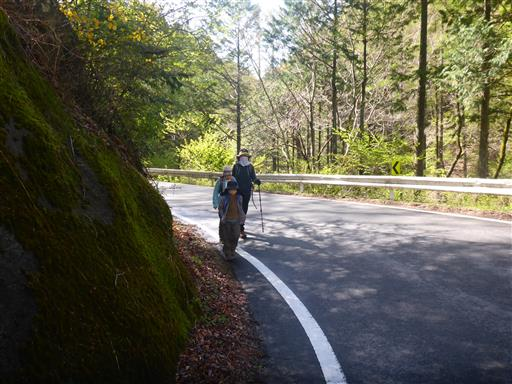
逢瀬の滝。木が生い茂っていて、よく見えない。
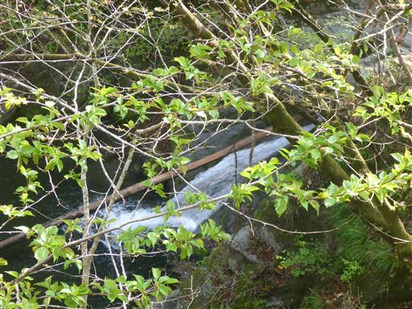
車道歩きは長いが、周囲の新緑を眺めながら歩くと、あまり苦にならない。
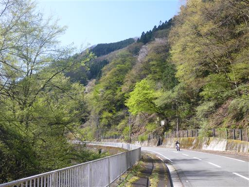
車道沿いの岩壁に穴が開いている。
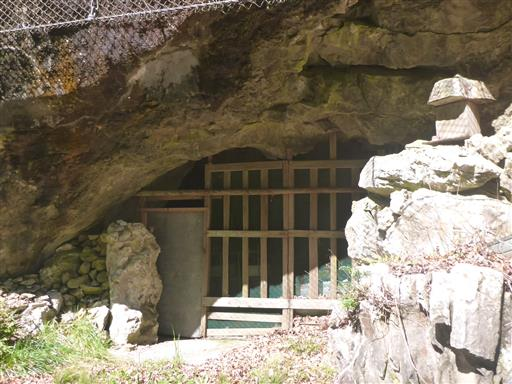
中を覗いてみる。棚や傘が置かれている謎の穴だ。
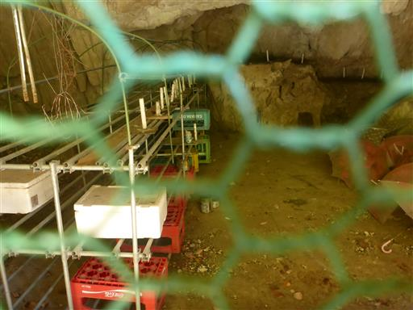
田舎暮らし体験処。
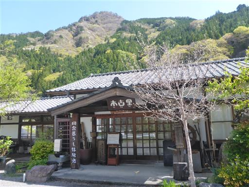
コロナの影響で休業中。すでに休業して1年、当分休業は続きそうだ。
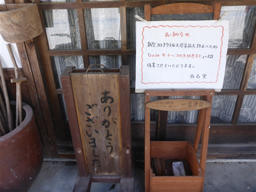
春の里山の風景。
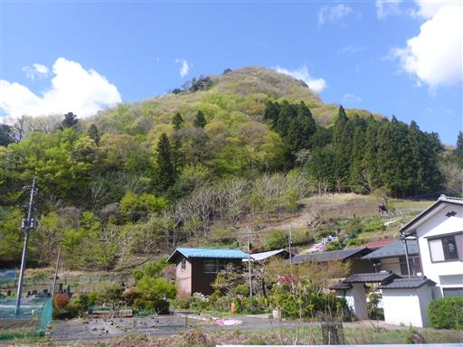
新しい道路を建設中。昨年訪れたときにはなかったものだ。

畑の中の道を通らせていただいて、登山道に入る。
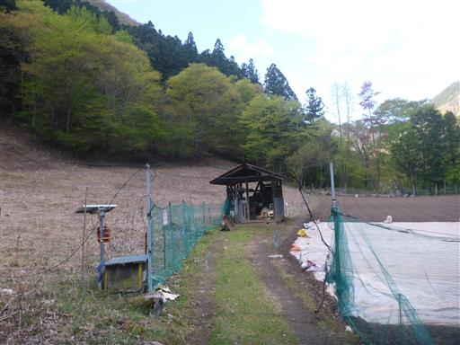
ここから登山道が始まる。
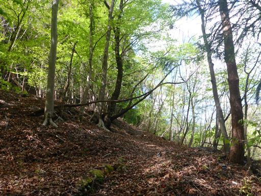
ヒトリシズカの花があちらこちらに咲いている。
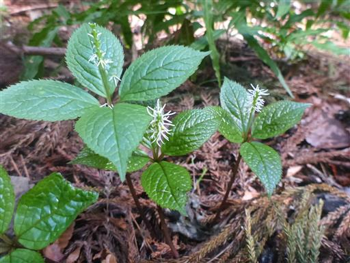
岩がちな地形になってきた。昨年事件が起きたのはこの辺り。
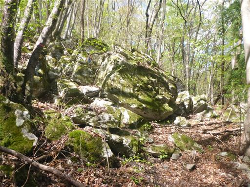
マムシグサだろうか？
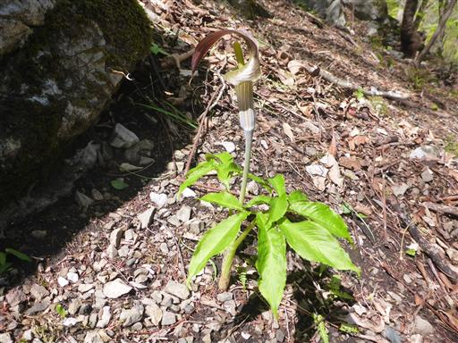
岩が木につっかえている。いつかこの石は転げ落ちそうだ。
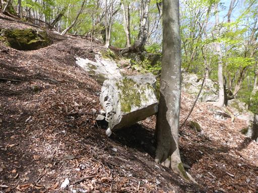
立処山の岩壁が見えてきた。
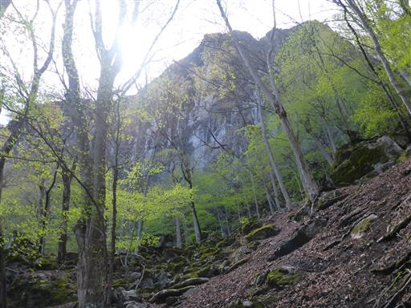
鍾乳洞入口に到着。
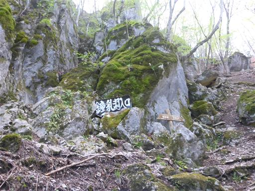
この大きな岩壁の基部に鍾乳洞入口がある。
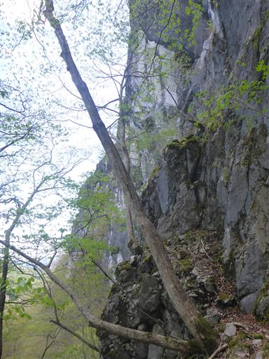
側の木の穴にビー玉が埋め込まれている。
木が生長して、もうビー玉を取り出すのは不可能だ。
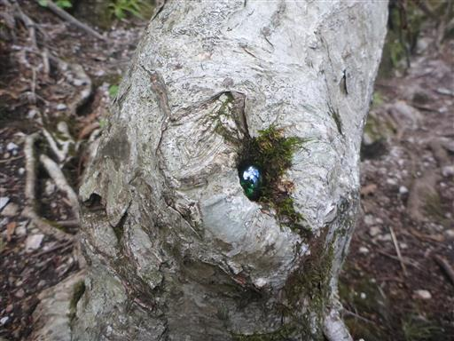
岩の小さな割れ目が鍾乳洞入口。

入洞。
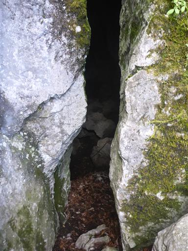
子供達にとっては初めての観光地化されていない洞窟。
なかなかできない体験だ。
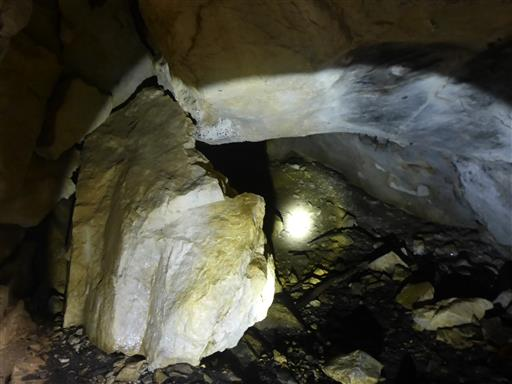
梯子など一応足元は整備されている。
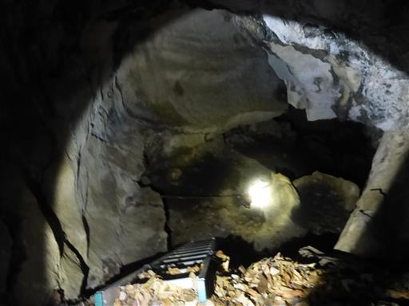
慎重に梯子を降りる。
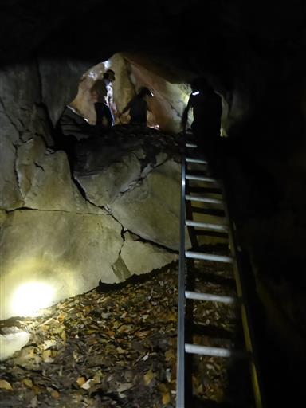
洞窟は続く。結構深い。
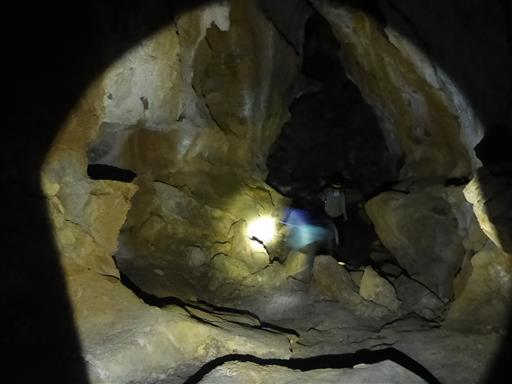
天井に光を当てると鍾乳洞っぽい景色が広がる。
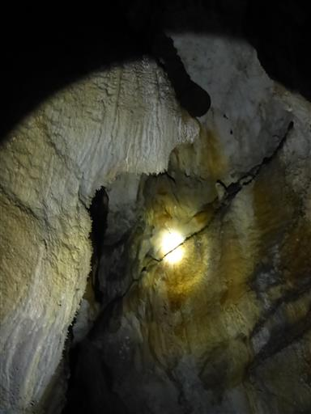
見た目ほど滑りやすくはないが、岩が濡れているため慎重に歩く。
視界が悪く、天井にも気を付けないといけないので、歩くのは難しい。
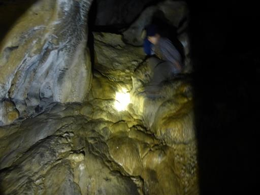
コウモリ発見。
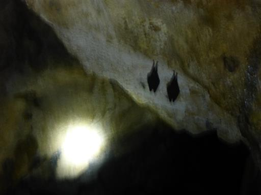
こちらは大量に固まっている。身を寄せ合って寝ているようだ。
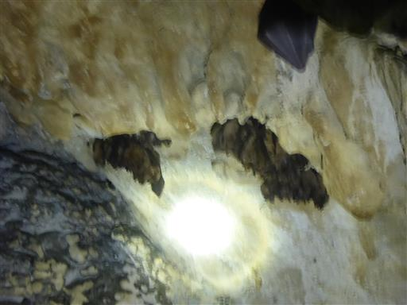
鍾乳石の石柱。
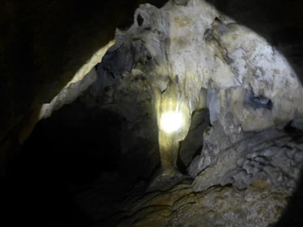
その先は傾斜が急になって歩きにくいので一人で探索。2個目の梯子が見つかる。
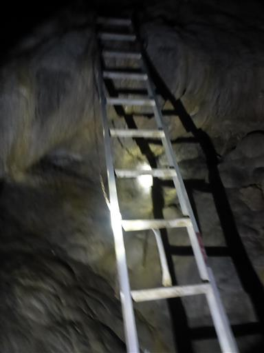
カマドウマの大群。
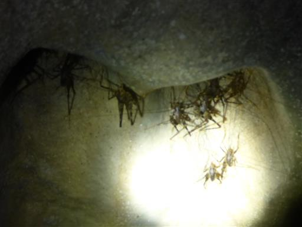
最深部。ここで行き止まりだ。周りを見渡すが特に何もない。
引き返すことにする。
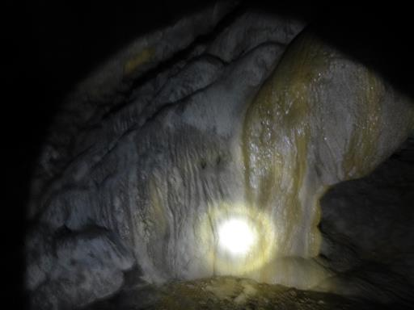
鍾乳洞から出てくる。光が眩しい。
光と音が全くない洞窟、間近で見るコウモリなど、めったにない体験ができた。
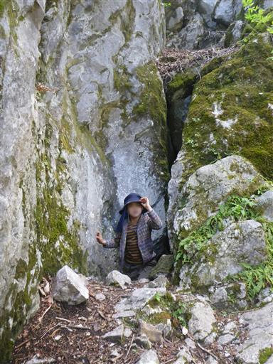
ここから立処山まではあと僅か。傾斜のきつい斜面を登る。
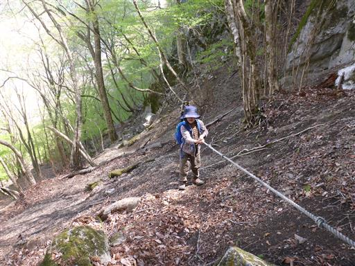
西上州らしい相変わらず雑な付け方の登山道。
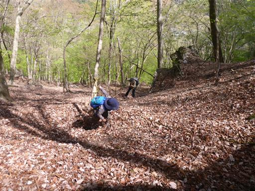
稜線に到達する。ものすごく風が強い。
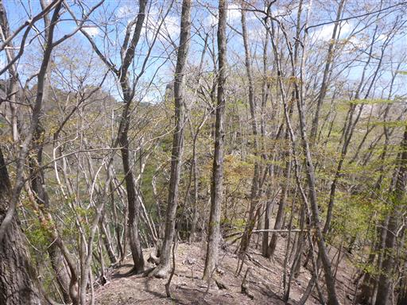
周囲は美しい石灰岩の道になる。
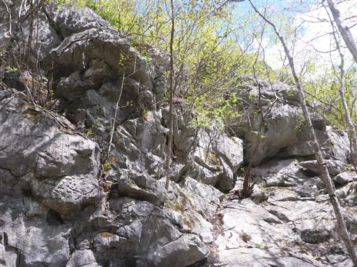
水に溶けやすい石灰岩はあちらこちら穴が開いている。
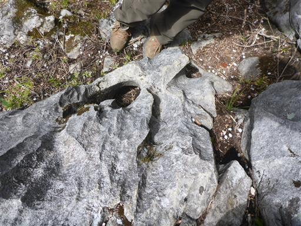
少々岩登りがあるが、難易度は非常に低い。
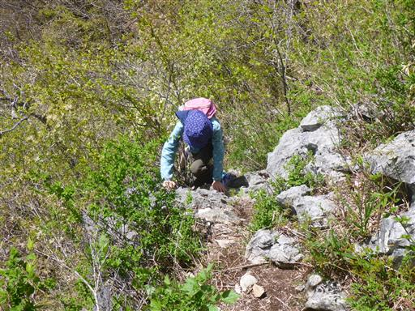
立処山山頂に到着。標高735m。
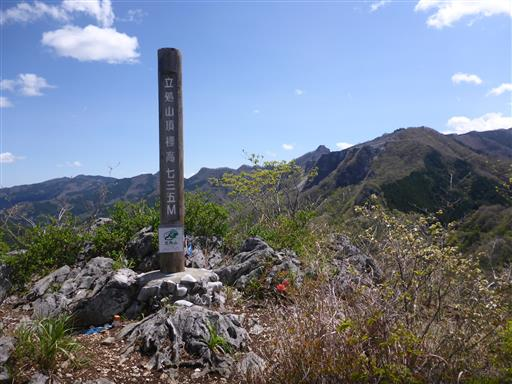
両神山方面。見えているのは赤岩尾根の辺りだろうか？
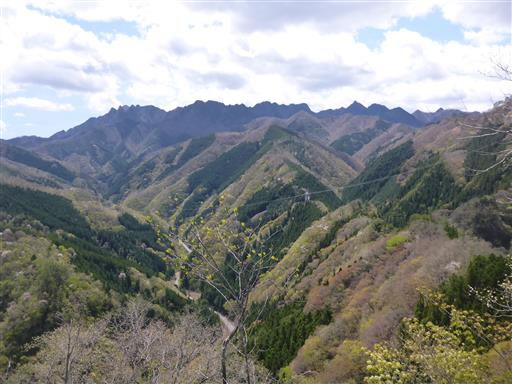
こちらは叶山。頭が削られて無くなってしまった山だ。
立処山や近くにある二子山の素晴らしさを考えると、叶山も良い山だったのだろう。
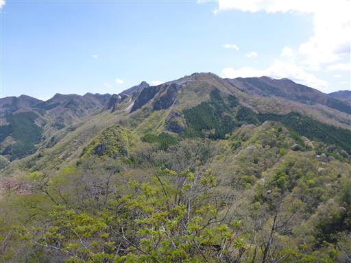
足元には登山口付近の集落が見える。
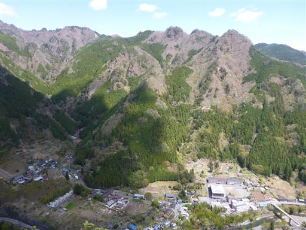
遠くの方には分厚い雲が出ている。予報通り、場所によっては天気が悪いのかもしれない。
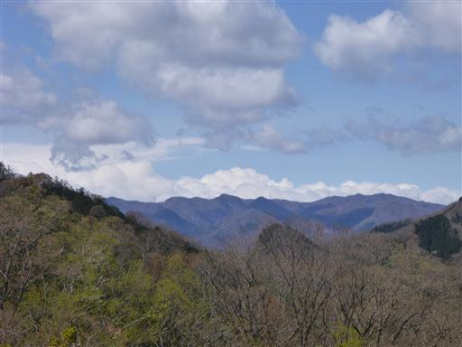
風が強いので、山頂では休まず早々に脱出。
岩壁が連なる風景は独特だ。
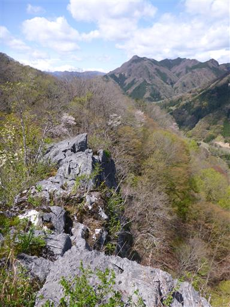
岩の割れ目から小さな花が咲いている。ジュウニヒトエだろうか？
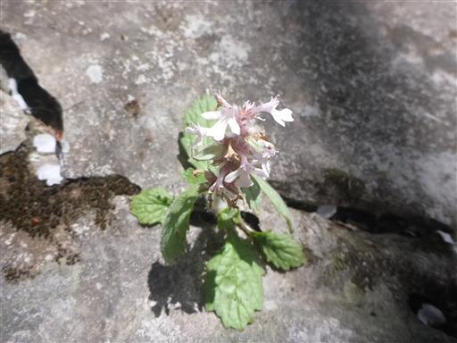
登山道を少し引き返したら、分岐点から明家に向かう道を歩く。
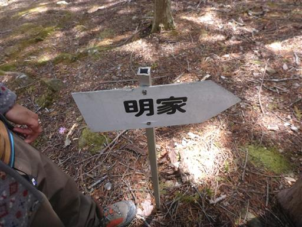
気持ちの良い尾根道。苔に覆われていてあまり人が歩いた形跡がない。
風が避けられる場所で昼食休憩をとる。
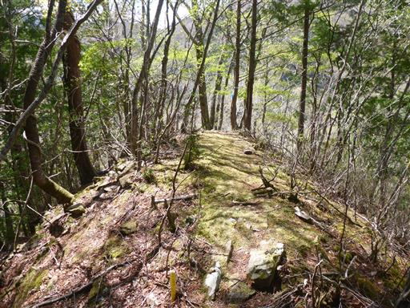
痩せた尾根が続くが、危険はあまりない。
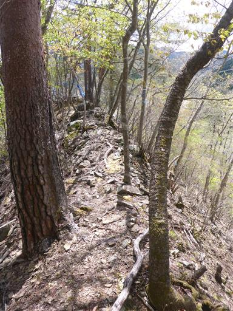
一瞬アカヤシオかと思ったが、ミツバツツジのようだ。残念。
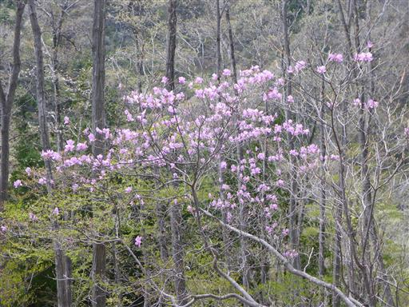
新緑が広がる美しい尾根道。
岩場が現れる。
ツル植物に覆われて倒れた枯木。ものすごいツルの量だ。
こちらも太いツルが巻き付いている。
再び岩場が現れる。
楽しい岩場。この辺りがこの尾根道で一番難易度の高い場所だ。
木に何やら文字が書かれている。山の所有者が記載されているのだろうか？
送電線鉄塔から岩山が見える。
所々で防獣ネットが現れる。何度も出たり入ったりさせられて、結構面倒だ。
ネット沿いの道を歩く。
明家に到着。山の中腹の家が数件しかない廃村だ。
家はだいぶ崩壊が進んでいる。
何年前に放棄されたのだろう？
車も入れなくなっていくだろうし、このまま放棄され続けるのだろうか？
タイヤの中から木が生えている。
周囲はタイヤやドラム缶が放棄されて景観が悪いが、風があまりないので
ここでおやつ休憩をとる。
明家を後にする。
これは一体何だろう？
オバンド峠に到着。小さな祠がある。
ここから稜線を外れて下山だ。
ジグザグ道を下る。
こちらもジグザグ道。子供たちは走って斜面に乗りあげて遊んでいる。
少し登山道が崩壊しているが、ロープが無くても問題ない程度だ。
沢沿いの新緑。
車道に下山。
下山地点に小さな神社がある。
あとは車道を歩いて駐車場に向かう。春爛漫の景色だ。
釣り堀。水が流れ落ちているところを魚が一生懸命登ろうとしているが
柵に遮られて登れない。ちょっとかわいそうだ。
1年前に遊んだ恐竜公園を発見。
子供達は1年前の記憶が蘇ったようで、ここで遊び出す。
この1年の間でここで遊んだ子供は何人いるのだろう？
今年も登ったりジャンプしたり、しばらく遊んでから帰宅する。
立処山は鍾乳洞、岩場、廃村、美しい新緑と短いながらも見どころの多い山だった。